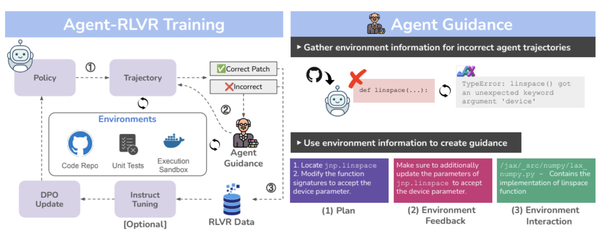
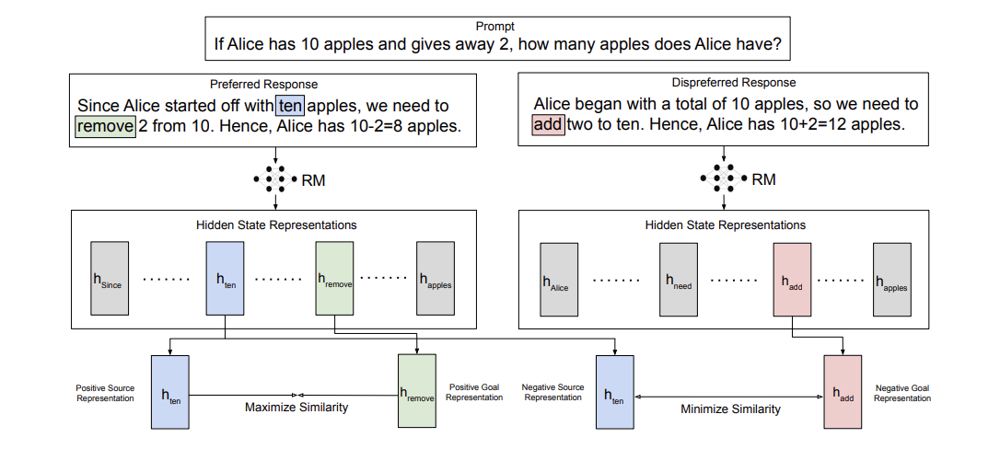
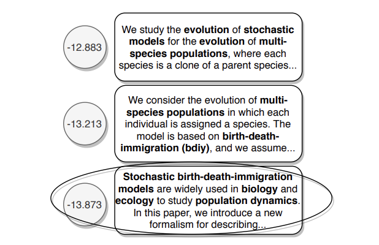

|
Jeff Da
I'm currently a research scientist at Scale AI.
At Scale, I lead research on reinforcement learning, agents, and post-training. Prior to Scale, I was at the Allen Institute for AI and University of Washington, where I did research on a variety of topics in reasoning, evals, and multimodality. I worked with Yejin Choi, with additional mentorship from Antoine Bosselut, Maxwell Forbes, and many other amazing collaborators.
[Google Scholar]
[Twitter]
[Github]
|
|
|

|
Agent-RLVR: Training Software Engineering Agents via Guidance and Environment Rewards
Jeff Da, Clinton Wang, Xiang Deng, Yuntao Ma, Nikhil Barhate, Sean Hendryx
arxiv, 2025
We introduce Agent-RLVR, a novel reinforcement learning technique via teacher-student multi-agent co-evolution. To that end, we train SWE-Agents using RL and verifiable rewards that significantly improve upon the base model.
|
|
|
A Careful Examination of Large Language Model Performance on Grade School Arithmetic
Hugh Zhang, Jeff Da, Dean Lee, Vaughn Robinson, Catherine Wu, Will Song, Tiffany Zhao, Pranav Raja, Charlotte Zhuang, Dylan Slack, Qin Lyu, Sean Hendryx, Russell Kaplan, Michele Lunati, Summer Yue
NeurIPS Spotlight (Datasets and Benchmarks Track), 2024
We create GSM1k, an uncomtaminated replication of the popular GSM8k dataset. We find that several model families tend to show overfitting on GSM8k, but frontier models show generalizability.
|
|

|
Learning Goal-Conditioned Representations for Language Reward Models
Vaskar Nath, Dylan Slack, Jeff Da, Yuntao Ma, Hugh Zhang, Spencer Whitehead, Sean Hendryx
NeurIPS, 2024
We find that training reward models using a goal-conditioned reward function improves reasoning + general alignment performance.
|
|
|
Do Androids Laugh at Electric Sheep? Humor Understanding Benchmarks from the New Yorker Caption Contest
Jack Hessel, Ana Marasović, Jena D. Hwang, Lillian Lee, Jeff Da, Rowan Zellers, Robert Mankoff, Yejin Choi
ACL Best Paper, 2023
We create a dataset based on the New Yorker Cartoon Caption Contest and find that many frontier models struggle with humor understanding.
|
|
|
Analyzing Commonsense Emergence in Few-shot Knowledge Models
Jeff Da, Ronan Le Bras, Ximing Lu, Yejin Choi, Antoine Bosselut
AKBC, 2021
We find that we can use few-shot framing to train commonsense knowledge models.
|
|
|
Edited Media Understanding: Reasoning About Implications of Manipulated Images
Jeff Da, Max Forbes, Rowan Zellers, Anthony Zheng, Jena Hwang, Antoine Bosseult, Yejin Choi
ACL, 2021
We create EMU Frames, a multimodal dataset for evaluating model ability to understand the intent and implications of altered images.
|
|

|
Discourse Understanding and Factual Consistency in Abstractive Summarization
Saadia Gabriel, Antoine Bosselut, Jeff Da, Ari Holtzman, Jan Buys, Kyle Lo, Asli Celikyilmaz, Yejin Choi
EACL, 2021
We propose Co-opNet, a transformer-based framework where the generator works with a discriminator architecture to compose coherent long-form summaries.
|
|
|
COMET-ATOMIC 2020: On Symbolic and Neural Commonsense Knowledge Graphs
Jena D. Hwang, Chandra Bhagavatula, Ronan Le Bras, Jeff Da, Keisuke Sakaguchi, Antoine Bosselut, Yejin Choi
AAAI, 2021
We introduce COMET-ATOMIC 2020, a large-scale commonsense knowledge graph dataset.
|
|
|
Cracking the Contextual Commonsense Code: Understanding commonsense reasoning capabilities of contextual representations
Jeff Da, Jungo Kasai
EMNLP Workshop COIN, 2019
We find that transformers encode commonsense in their embedding layers.
|
|
|
BIG MOOD: Relating Transformers to Explicit Commonsense Knowledge
Jeff Da
EMNLP Workshop COIN, 2019
We study the ability to post-train language models via explicit commonsense knowledge references.
|
|
{kind=link}